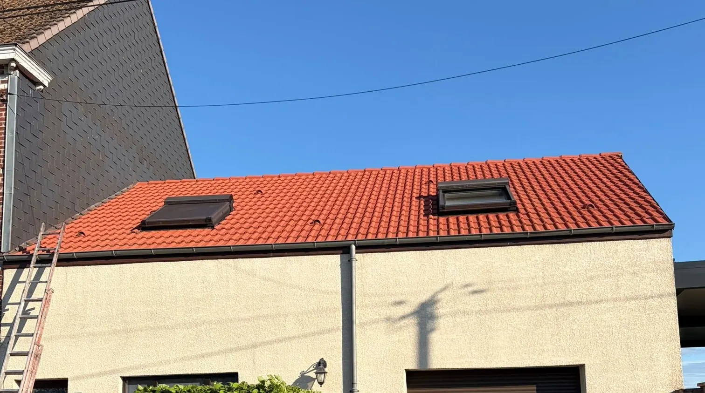
Voyez la différence avant même de nous appeler
Une toiture noircie qui retrouve sa teinte, une façade qui redevient claire, une terrasse débarrassée de la mousse : ces photos montrent ce que nous faisons concrètement chez nos clients.
Particuliers comme professionnels nous confient leurs extérieurs. Du simple nettoyage au traitement hydrofuge, coloré ou incolore, chaque chantier est mené avec du matériel professionnel et une méthode choisie selon le matériau.
Filtrez les chantiers par catégorie, puis comparez l'avant et l'après avec les curseurs plus bas : le résultat se juge en un coup d'œil.
Toitures
Démoussage de tuiles, d'ardoises ou de fibrociment, avec ou sans hydrofuge pour garder le toit propre plus longtemps. Voir le service.
Façades
Brique, crépi, pierre ou PVC : un nettoyage adapté à chaque matériau pour redonner de l'éclat à la maison. Voir le service.
Terrasses et allées
Dalles et pavés retrouvent leur aspect d'origine, sans mousse ni zones glissantes. Voir le service.
 Toiture
Nord-Pas-de-Calais
Toiture
Nord-Pas-de-Calais
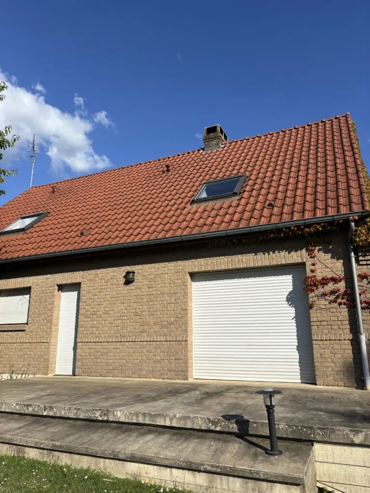
Toiture Nord-Pas-de-Calais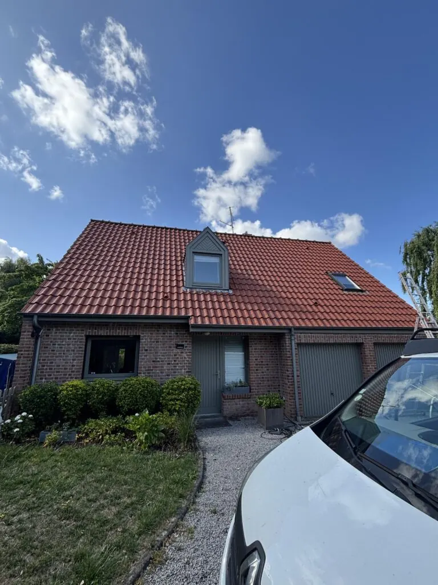
Toiture Nord-Pas-de-Calais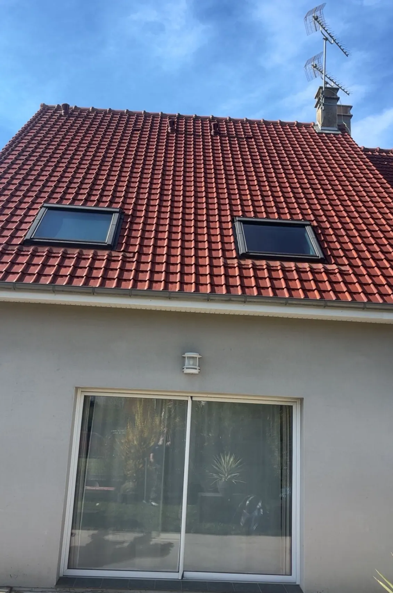
Toiture Nord-Pas-de-Calais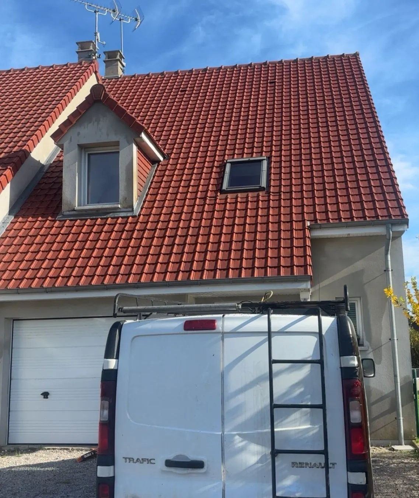
Toiture Nord-Pas-de-Calais Toiture
Nord-Pas-de-Calais
Toiture
Nord-Pas-de-Calais
 Toiture
Nord-Pas-de-Calais
Toiture
Nord-Pas-de-Calais
 Toiture
Nord-Pas-de-Calais
Toiture
Nord-Pas-de-Calais
 Toiture
Nord-Pas-de-Calais
Toiture
Nord-Pas-de-Calais
 Façade
Nord-Pas-de-Calais
Façade
Nord-Pas-de-Calais
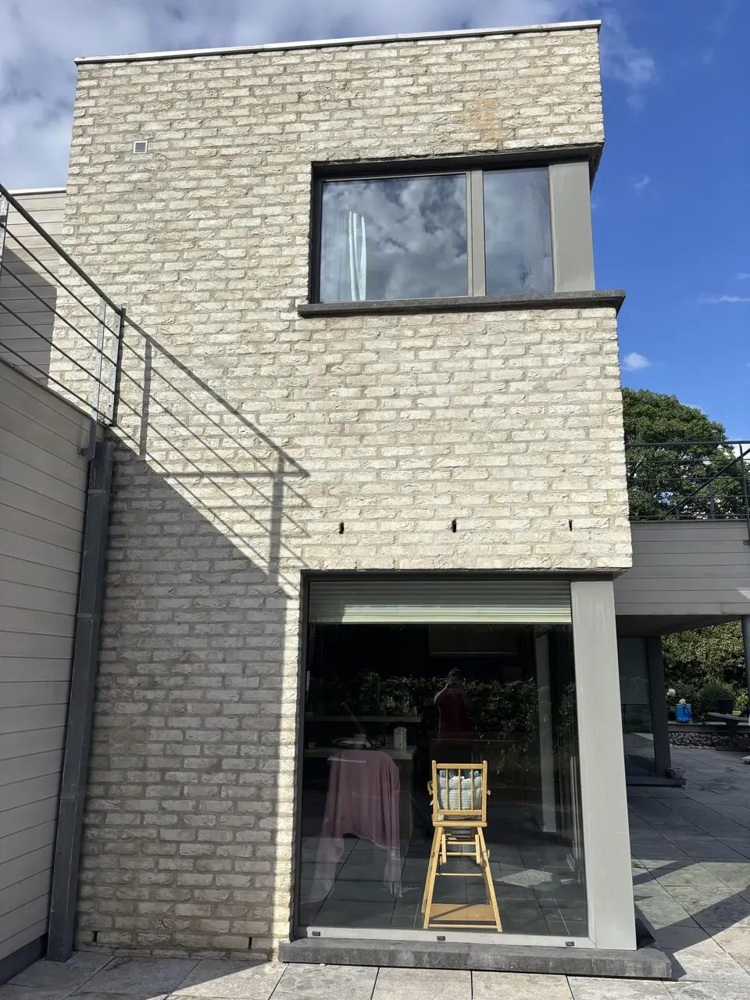
Façade Nord-Pas-de-Calais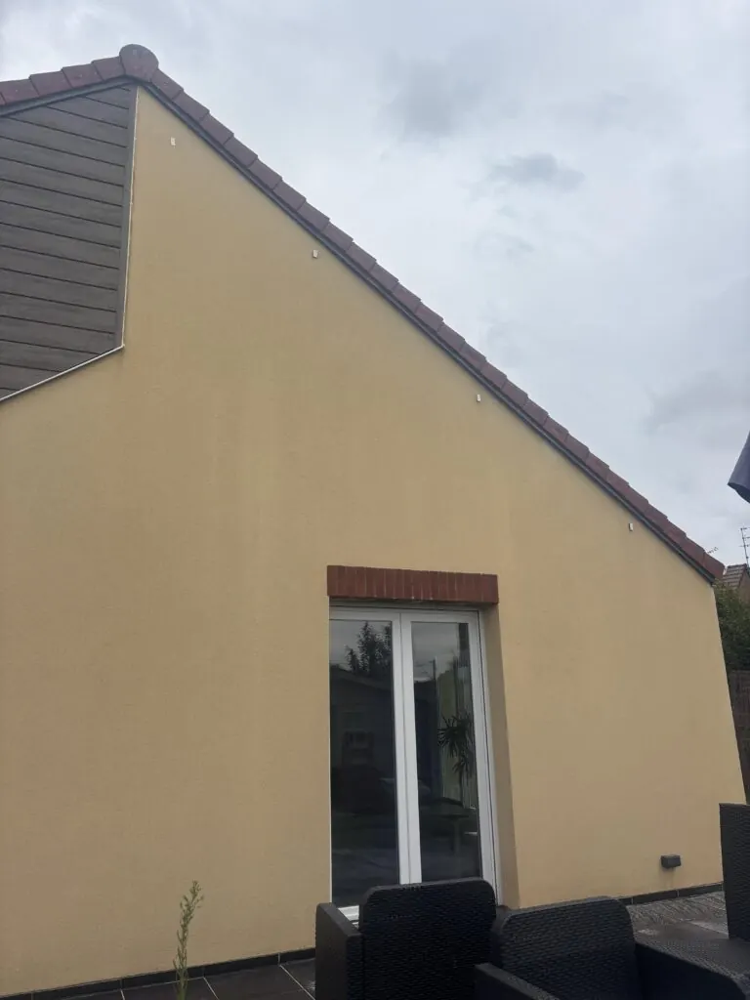
Façade Nord-Pas-de-Calais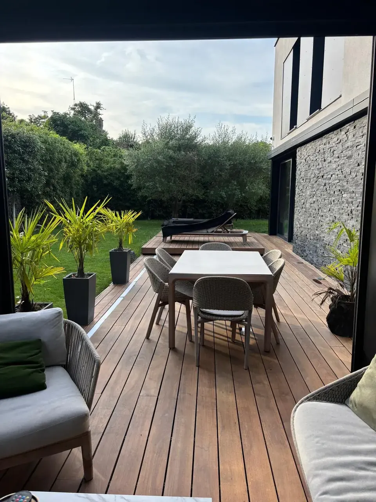
Terrasse Nord-Pas-de-Calais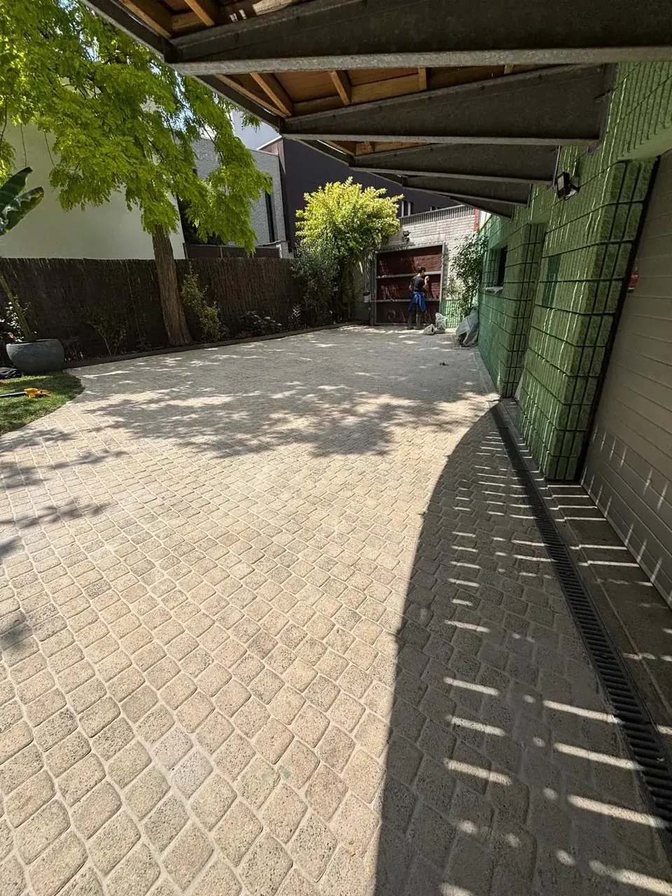
Terrasse Nord-Pas-de-CalaisLe même chantier, avant et après notre passage
Faites glisser chaque curseur pour comparer.

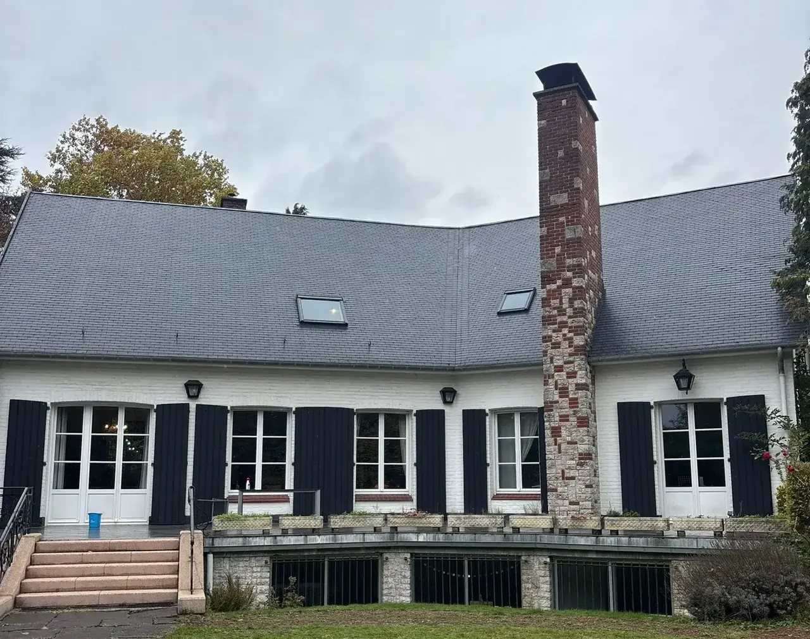
Démoussage d'une toiture en ardoise – Nord-Pas-de-Calais
Démoussage de toiture - ardoise
Démoussage d'une toiture en tuiles – Nord-Pas-de-Calais
Démoussage de toiture - tuile
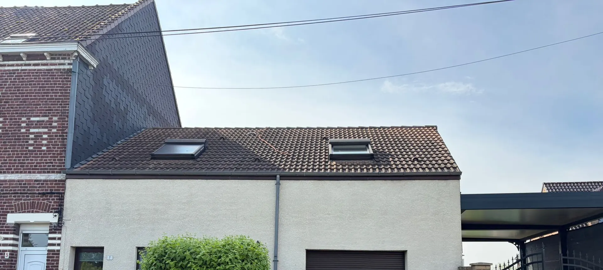
Toiture en tuiles béton : démoussage et hydrofuge coloré – Nord-Pas-de-Calais
Hydrofuge coloré sur tuiles béton

Toiture en tuiles : démoussage et hydrofuge incolore – Nord-Pas-de-Calais
Hydrofuge incolore après démoussage
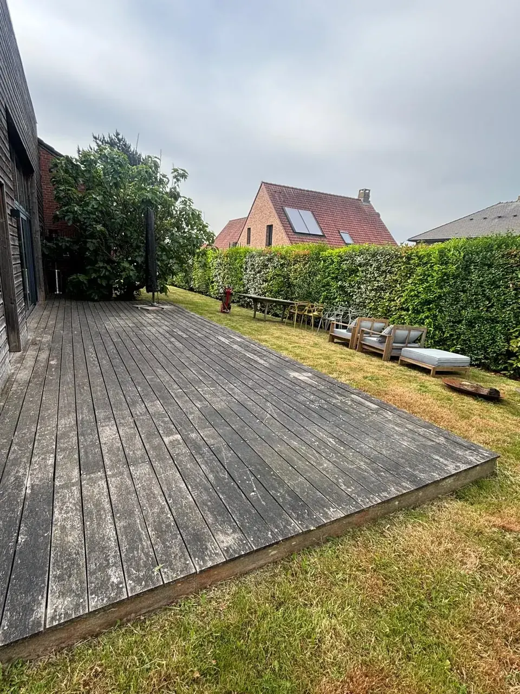

Nettoyage d'une terrasse en bois – Nord-Pas-de-Calais
Nettoyage de terrasse en bois
Nettoyage d'une allée pavée – Nord-Pas-de-Calais
Nettoyage d'allée pavée, comme pour une terrasse
Nous intervenons dans tout le Nord et le Pas-de-Calais : voir nos zones d'intervention.
Le même résultat chez vous, en 4 étapes
Appel & diagnostic
Vous nous appelez ou remplissez le formulaire. Nous nous déplaçons gratuitement pour évaluer le chantier.
Devis sous 24h
Vous recevez un devis clair et détaillé, sans engagement de votre part.
Intervention
Nous intervenons avec du matériel professionnel, dans le respect de vos biens.
Protection durable
Un traitement hydrofuge incolore ou coloré peut être appliqué selon votre souhait.